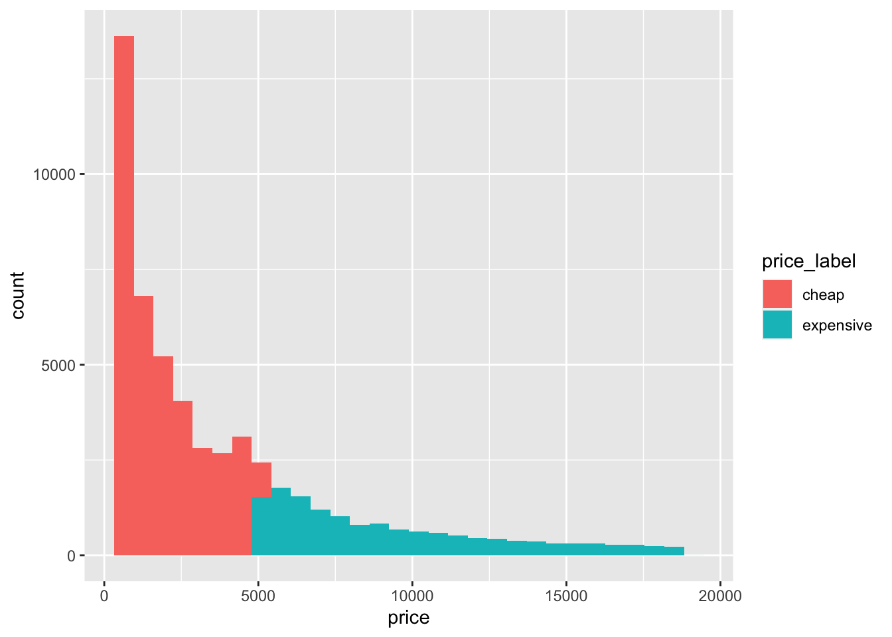

5 Manipulating data with dplyr
The dplyr package, part of the tidyverse, is designed to make manipulating and transforming data as simple and intuitive as possible.
A guiding principle for tidyverse packages (and RStudio), is to minimize the number of keystrokes and characters required to get the results you want. To this end, as for ggplot, in dplyr, quotation marks for the column names of data frames are often not required. Another key feature of the tidyverse data wrangling packages such as dplyr, is that the input to and output from all functions, are data frames.
dplyr features a handful of key functions, also termed ‘verbs’, which can be combined to achieve very specific results. You will notice similarities to the functions available in Microsoft Excel.
We will explore the first of these verbs using the mpg_df dataset created earlier. If starting from a new Rstudio session you should open Week_2_tidyverse.R and run the following code:
library(tidyverse)
mpg_df <- mpg5.1 filter()
The filter() function subsets the rows in a data frame by testing against a conditional statement. The output from a successful filter() will be a data frame with fewer rows than the input data frame.

Let’s filter the mpg_df data for cars manufactured in the year 1999:
mpg_df %>% filter(year == 1999)## # A tibble: 117 x 11
## manufacturer model displ year cyl trans drv cty hwy fl class
## <chr> <chr> <dbl> <int> <int> <chr> <chr> <int> <int> <chr> <chr>
## 1 audi a4 1.8 1999 4 auto(l5) f 18 29 p compact
## 2 audi a4 1.8 1999 4 manual(m5) f 21 29 p compact
## 3 audi a4 2.8 1999 6 auto(l5) f 16 26 p compact
## 4 audi a4 2.8 1999 6 manual(m5) f 18 26 p compact
## 5 audi a4 quattro 1.8 1999 4 manual(m5) 4 18 26 p compact
## 6 audi a4 quattro 1.8 1999 4 auto(l5) 4 16 25 p compact
## 7 audi a4 quattro 2.8 1999 6 auto(l5) 4 15 25 p compact
## 8 audi a4 quattro 2.8 1999 6 manual(m5) 4 17 25 p compact
## 9 audi a6 quattro 2.8 1999 6 auto(l5) 4 15 24 p midsize
## 10 chevrolet c1500 suburban 2wd 5.7 1999 8 auto(l4) r 13 17 r suv
## # … with 107 more rowsHere we are ‘sending’ the mpg_df data frame into the function filter(), which tests each value in the year column for the number 1999, and returns those rows where the filter() condition is TRUE.
If you are working in an R text document (.R format) or directly in the console, after running this command you will see the dimensions of the output data frame printed in grey text above the column names.
Alternatively you can ‘send’ the output of filter (a data frame) into the dim() function.
mpg_df %>% filter(year==1999) %>% dim()## [1] 117 11We can also filter on character data. For example, let’s take all vehicles in the ‘midsize’ class:
mpg_df %>% filter(class=='midsize')## # A tibble: 41 x 11
## manufacturer model displ year cyl trans drv cty hwy fl class
## <chr> <chr> <dbl> <int> <int> <chr> <chr> <int> <int> <chr> <chr>
## 1 audi a6 quattro 2.8 1999 6 auto(l5) 4 15 24 p midsize
## 2 audi a6 quattro 3.1 2008 6 auto(s6) 4 17 25 p midsize
## 3 audi a6 quattro 4.2 2008 8 auto(s6) 4 16 23 p midsize
## 4 chevrolet malibu 2.4 1999 4 auto(l4) f 19 27 r midsize
## 5 chevrolet malibu 2.4 2008 4 auto(l4) f 22 30 r midsize
## 6 chevrolet malibu 3.1 1999 6 auto(l4) f 18 26 r midsize
## 7 chevrolet malibu 3.5 2008 6 auto(l4) f 18 29 r midsize
## 8 chevrolet malibu 3.6 2008 6 auto(s6) f 17 26 r midsize
## 9 hyundai sonata 2.4 1999 4 auto(l4) f 18 26 r midsize
## 10 hyundai sonata 2.4 1999 4 manual(m5) f 18 27 r midsize
## # … with 31 more rowsCan you filter mpg_df for all vehicles except the Hyundais?
5.1.1 Logical operations
5.1.1.1 & and
We can achieve more specific filters by combining conditions across columns. For example, we use the “&” sign to filter for vehicles built in 1999 and with mileage in the city (cty) greater than 18.
mpg_df %>% filter(year == 1999 & cty > 18)## # A tibble: 33 x 11
## manufacturer model displ year cyl trans drv cty hwy fl class
## <chr> <chr> <dbl> <int> <int> <chr> <chr> <int> <int> <chr> <chr>
## 1 audi a4 1.8 1999 4 manual(m5) f 21 29 p compact
## 2 chevrolet malibu 2.4 1999 4 auto(l4) f 19 27 r midsize
## 3 honda civic 1.6 1999 4 manual(m5) f 28 33 r subcompact
## 4 honda civic 1.6 1999 4 auto(l4) f 24 32 r subcompact
## 5 honda civic 1.6 1999 4 manual(m5) f 25 32 r subcompact
## 6 honda civic 1.6 1999 4 manual(m5) f 23 29 p subcompact
## 7 honda civic 1.6 1999 4 auto(l4) f 24 32 r subcompact
## 8 hyundai tiburon 2 1999 4 auto(l4) f 19 26 r subcompact
## 9 hyundai tiburon 2 1999 4 manual(m5) f 19 29 r subcompact
## 10 nissan altima 2.4 1999 4 manual(m5) f 21 29 r compact
## # … with 23 more rowsTo see the entire output you can pipe the output from filter into a View() command
mpg_df %>% filter(year==1999 & cty > 18) %>% View()5.1.1.2 | or
Alternatively we might want to filter for vehicles (i.e., rows) where the manufacturer is Chevrolet or the class is ‘suv’. This requires the “|” symbol (shift + \)
mpg_df %>% filter(manufacturer=='chevrolet' | class=='suv')## # A tibble: 72 x 11
## manufacturer model displ year cyl trans drv cty hwy fl class
## <chr> <chr> <dbl> <int> <int> <chr> <chr> <int> <int> <chr> <chr>
## 1 chevrolet c1500 suburban 2wd 5.3 2008 8 auto(l4) r 14 20 r suv
## 2 chevrolet c1500 suburban 2wd 5.3 2008 8 auto(l4) r 11 15 e suv
## 3 chevrolet c1500 suburban 2wd 5.3 2008 8 auto(l4) r 14 20 r suv
## 4 chevrolet c1500 suburban 2wd 5.7 1999 8 auto(l4) r 13 17 r suv
## 5 chevrolet c1500 suburban 2wd 6 2008 8 auto(l4) r 12 17 r suv
## 6 chevrolet corvette 5.7 1999 8 manual(m6) r 16 26 p 2seater
## 7 chevrolet corvette 5.7 1999 8 auto(l4) r 15 23 p 2seater
## 8 chevrolet corvette 6.2 2008 8 manual(m6) r 16 26 p 2seater
## 9 chevrolet corvette 6.2 2008 8 auto(s6) r 15 25 p 2seater
## 10 chevrolet corvette 7 2008 8 manual(m6) r 15 24 p 2seater
## # … with 62 more rows5.1.1.3 and/or
To take it a step further we can combine & and | in the same filter command. Adding curved brackets will help to clarify the order of operations.
Let’s filter for the vehicles where the manufacturer is Chevrolet or the class is ‘suv’, and all vehicles with highway mileage less than 20.
mpg_df %>% filter( (manufacturer=='chevrolet' | class=='suv') & hwy < 20) ## # A tibble: 48 x 11
## manufacturer model displ year cyl trans drv cty hwy fl class
## <chr> <chr> <dbl> <int> <int> <chr> <chr> <int> <int> <chr> <chr>
## 1 chevrolet c1500 suburban 2wd 5.3 2008 8 auto(l4) r 11 15 e suv
## 2 chevrolet c1500 suburban 2wd 5.7 1999 8 auto(l4) r 13 17 r suv
## 3 chevrolet c1500 suburban 2wd 6 2008 8 auto(l4) r 12 17 r suv
## 4 chevrolet k1500 tahoe 4wd 5.3 2008 8 auto(l4) 4 14 19 r suv
## 5 chevrolet k1500 tahoe 4wd 5.3 2008 8 auto(l4) 4 11 14 e suv
## 6 chevrolet k1500 tahoe 4wd 5.7 1999 8 auto(l4) 4 11 15 r suv
## 7 chevrolet k1500 tahoe 4wd 6.5 1999 8 auto(l4) 4 14 17 d suv
## 8 dodge durango 4wd 3.9 1999 6 auto(l4) 4 13 17 r suv
## 9 dodge durango 4wd 4.7 2008 8 auto(l5) 4 13 17 r suv
## 10 dodge durango 4wd 4.7 2008 8 auto(l5) 4 9 12 e suv
## # … with 38 more rows5.1.2 str_detect() helper function
Often we want to capture rows containing a particular sequence of letters. For example, there are 10 different vehicle models containing the letters ‘4wd’. We don’t want to have to write an ‘or’ command with 10 alternatives.
A much better way is to ‘detect’ the letters ‘4wd’ in the model column, and return all rows where they are present, using str_detect().
str_detect() is a command within filter() which requires the column name, followed by the letters (in quotes) to search for
mpg_df %>% filter(str_detect(model,'4wd')) ## # A tibble: 74 x 11
## manufacturer model displ year cyl trans drv cty hwy fl class
## <chr> <chr> <dbl> <int> <int> <chr> <chr> <int> <int> <chr> <chr>
## 1 chevrolet k1500 tahoe 4wd 5.3 2008 8 auto(l4) 4 14 19 r suv
## 2 chevrolet k1500 tahoe 4wd 5.3 2008 8 auto(l4) 4 11 14 e suv
## 3 chevrolet k1500 tahoe 4wd 5.7 1999 8 auto(l4) 4 11 15 r suv
## 4 chevrolet k1500 tahoe 4wd 6.5 1999 8 auto(l4) 4 14 17 d suv
## 5 dodge dakota pickup 4wd 3.7 2008 6 manual(m6) 4 15 19 r pickup
## 6 dodge dakota pickup 4wd 3.7 2008 6 auto(l4) 4 14 18 r pickup
## 7 dodge dakota pickup 4wd 3.9 1999 6 auto(l4) 4 13 17 r pickup
## 8 dodge dakota pickup 4wd 3.9 1999 6 manual(m5) 4 14 17 r pickup
## 9 dodge dakota pickup 4wd 4.7 2008 8 auto(l5) 4 14 19 r pickup
## 10 dodge dakota pickup 4wd 4.7 2008 8 auto(l5) 4 14 19 r pickup
## # … with 64 more rowsNote that the letter order and case have to be matched exactly.
How would you filter for all vehicles with automatic transmission?
5.1.3 %in% helper
When we are interested in a subset of rows that can contain several different values, instead of writing a long OR command, its useful to just give a vector of values of interest.
For example, to take the subset of the vehicles in mpg_df that have 4, 5, or 6 cylinders, we can specify cyl %in% c(4,5,6)
mpg_df %>% filter(cyl %in% c(4,5,6))## # A tibble: 164 x 11
## manufacturer model displ year cyl trans drv cty hwy fl class
## <chr> <chr> <dbl> <int> <int> <chr> <chr> <int> <int> <chr> <chr>
## 1 audi a4 1.8 1999 4 auto(l5) f 18 29 p compact
## 2 audi a4 1.8 1999 4 manual(m5) f 21 29 p compact
## 3 audi a4 2 2008 4 manual(m6) f 20 31 p compact
## 4 audi a4 2 2008 4 auto(av) f 21 30 p compact
## 5 audi a4 2.8 1999 6 auto(l5) f 16 26 p compact
## 6 audi a4 2.8 1999 6 manual(m5) f 18 26 p compact
## 7 audi a4 3.1 2008 6 auto(av) f 18 27 p compact
## 8 audi a4 quattro 1.8 1999 4 manual(m5) 4 18 26 p compact
## 9 audi a4 quattro 1.8 1999 4 auto(l5) 4 16 25 p compact
## 10 audi a4 quattro 2 2008 4 manual(m6) 4 20 28 p compact
## # … with 154 more rows5.1.4 is.na() helper
If there are NA (missing) values in a particular column, we can inspect or drop them using the is.na() helper.
To check for the presence of NA values in the year column, for example:
mpg %>% filter(is.na(year))## # A tibble: 0 x 11
## # … with 11 variables: manufacturer <chr>, model <chr>, displ <dbl>, year <int>, cyl <int>, trans <chr>,
## # drv <chr>, cty <int>, hwy <int>, fl <chr>, class <chr>The mpg data set doesn’t contain any missing values, however in later chapters we will encounter them.
Any rows with a missing value in the year column would be dropped using the code
mpg %>% filter(!is.na(year))5.1.5 complete.cases() helper
Similar to is.na(), we can check for the presence of NA values across all columns of a dataframe using complete.cases(). This function is not part of the tidyverse package, so it requires a period . within the brackets, to indicate that we want to search across the entire dataframe.
To filter for only the rows with no missing values:
mpg %>% filter( complete.cases(.) )## # A tibble: 234 x 11
## manufacturer model displ year cyl trans drv cty hwy fl class
## <chr> <chr> <dbl> <int> <int> <chr> <chr> <int> <int> <chr> <chr>
## 1 audi a4 1.8 1999 4 auto(l5) f 18 29 p compact
## 2 audi a4 1.8 1999 4 manual(m5) f 21 29 p compact
## 3 audi a4 2 2008 4 manual(m6) f 20 31 p compact
## 4 audi a4 2 2008 4 auto(av) f 21 30 p compact
## 5 audi a4 2.8 1999 6 auto(l5) f 16 26 p compact
## 6 audi a4 2.8 1999 6 manual(m5) f 18 26 p compact
## 7 audi a4 3.1 2008 6 auto(av) f 18 27 p compact
## 8 audi a4 quattro 1.8 1999 4 manual(m5) 4 18 26 p compact
## 9 audi a4 quattro 1.8 1999 4 auto(l5) 4 16 25 p compact
## 10 audi a4 quattro 2 2008 4 manual(m6) 4 20 28 p compact
## # … with 224 more rowsAnd to filter for all rows with a missing value in at least one column:
mpg %>% filter( !complete.cases(.) )## # A tibble: 0 x 11
## # … with 11 variables: manufacturer <chr>, model <chr>, displ <dbl>, year <int>, cyl <int>, trans <chr>,
## # drv <chr>, cty <int>, hwy <int>, fl <chr>, class <chr>5.2 select()
Whereas filter() subsets a dataframe by row, select() returns a subset of the columns.

This function can take column names (even without quotes), or the column position number beginning at left.
Further, unlike in base R, commands within the brackets in select() do not need to be concatenated using c().
Let’s extract the car model, engine volume (displ) and highway mileage (hwy) from mpg_df:
mpg_df %>% select(model, displ, hwy)## # A tibble: 234 x 3
## model displ hwy
## <chr> <dbl> <int>
## 1 a4 1.8 29
## 2 a4 1.8 29
## 3 a4 2 31
## 4 a4 2 30
## 5 a4 2.8 26
## 6 a4 2.8 26
## 7 a4 3.1 27
## 8 a4 quattro 1.8 26
## 9 a4 quattro 1.8 25
## 10 a4 quattro 2 28
## # … with 224 more rowsWe can use ‘-’ to extract all except particular column(s). For example, to drop the model and year columns:
mpg_df %>% select(-model, -year)## # A tibble: 234 x 9
## manufacturer displ cyl trans drv cty hwy fl class
## <chr> <dbl> <int> <chr> <chr> <int> <int> <chr> <chr>
## 1 audi 1.8 4 auto(l5) f 18 29 p compact
## 2 audi 1.8 4 manual(m5) f 21 29 p compact
## 3 audi 2 4 manual(m6) f 20 31 p compact
## 4 audi 2 4 auto(av) f 21 30 p compact
## 5 audi 2.8 6 auto(l5) f 16 26 p compact
## 6 audi 2.8 6 manual(m5) f 18 26 p compact
## 7 audi 3.1 6 auto(av) f 18 27 p compact
## 8 audi 1.8 4 manual(m5) 4 18 26 p compact
## 9 audi 1.8 4 auto(l5) 4 16 25 p compact
## 10 audi 2 4 manual(m6) 4 20 28 p compact
## # … with 224 more rowsWe can also specify column positions. Take the data in columns number 1,5 and 11
mpg_df %>% select(1,5,11)## # A tibble: 234 x 3
## manufacturer cyl class
## <chr> <int> <chr>
## 1 audi 4 compact
## 2 audi 4 compact
## 3 audi 4 compact
## 4 audi 4 compact
## 5 audi 6 compact
## 6 audi 6 compact
## 7 audi 6 compact
## 8 audi 4 compact
## 9 audi 4 compact
## 10 audi 4 compact
## # … with 224 more rowsOr combine column positions and names:
mpg_df %>% select(1,3, cty, hwy)## # A tibble: 234 x 4
## manufacturer displ cty hwy
## <chr> <dbl> <int> <int>
## 1 audi 1.8 18 29
## 2 audi 1.8 21 29
## 3 audi 2 20 31
## 4 audi 2 21 30
## 5 audi 2.8 16 26
## 6 audi 2.8 18 26
## 7 audi 3.1 18 27
## 8 audi 1.8 18 26
## 9 audi 1.8 16 25
## 10 audi 2 20 28
## # … with 224 more rows5.2.1 contains() helper function
contains() is a helper function used with select(), which is analogous to the str_detect() helper used with filter().
To select only columns with names containing the letter ‘y’:
mpg_df %>% select(contains('y'))## # A tibble: 234 x 4
## year cyl cty hwy
## <int> <int> <int> <int>
## 1 1999 4 18 29
## 2 1999 4 21 29
## 3 2008 4 20 31
## 4 2008 4 21 30
## 5 1999 6 16 26
## 6 1999 6 18 26
## 7 2008 6 18 27
## 8 1999 4 18 26
## 9 1999 4 16 25
## 10 2008 4 20 28
## # … with 224 more rowscontains() is also useful for selecting all column names featuring a certain character, e.g. contains(’_’)
5.2.2 starts_with() helper function
start_with() and ends_with() offer more specificity for select(). If we want all columns beginning with the letter ‘c’:
mpg_df %>% select(starts_with('c'))## # A tibble: 234 x 3
## cyl cty class
## <int> <int> <chr>
## 1 4 18 compact
## 2 4 21 compact
## 3 4 20 compact
## 4 4 21 compact
## 5 6 16 compact
## 6 6 18 compact
## 7 6 18 compact
## 8 4 18 compact
## 9 4 16 compact
## 10 4 20 compact
## # … with 224 more rowsHappily we can even mix these helper functions with the standard select commands:
mpg_df %>% select( 2, 1, class, contains('y'))## # A tibble: 234 x 7
## model manufacturer class year cyl cty hwy
## <chr> <chr> <chr> <int> <int> <int> <int>
## 1 a4 audi compact 1999 4 18 29
## 2 a4 audi compact 1999 4 21 29
## 3 a4 audi compact 2008 4 20 31
## 4 a4 audi compact 2008 4 21 30
## 5 a4 audi compact 1999 6 16 26
## 6 a4 audi compact 1999 6 18 26
## 7 a4 audi compact 2008 6 18 27
## 8 a4 quattro audi compact 1999 4 18 26
## 9 a4 quattro audi compact 1999 4 16 25
## 10 a4 quattro audi compact 2008 4 20 28
## # … with 224 more rows5.2.3 everything() helper function
Lastly for select(), a very useful helper is the everything() function, which returns all column names that have not been specified. It is often used when reordering all columns in a dataframe:
mpg_df %>% select(class,displ,year,everything())## # A tibble: 234 x 11
## class displ year manufacturer model cyl trans drv cty hwy fl
## <chr> <dbl> <int> <chr> <chr> <int> <chr> <chr> <int> <int> <chr>
## 1 compact 1.8 1999 audi a4 4 auto(l5) f 18 29 p
## 2 compact 1.8 1999 audi a4 4 manual(m5) f 21 29 p
## 3 compact 2 2008 audi a4 4 manual(m6) f 20 31 p
## 4 compact 2 2008 audi a4 4 auto(av) f 21 30 p
## 5 compact 2.8 1999 audi a4 6 auto(l5) f 16 26 p
## 6 compact 2.8 1999 audi a4 6 manual(m5) f 18 26 p
## 7 compact 3.1 2008 audi a4 6 auto(av) f 18 27 p
## 8 compact 1.8 1999 audi a4 quattro 4 manual(m5) 4 18 26 p
## 9 compact 1.8 1999 audi a4 quattro 4 auto(l5) 4 16 25 p
## 10 compact 2 2008 audi a4 quattro 4 manual(m6) 4 20 28 p
## # … with 224 more rowsNote that the dimensions of the dataframe have not changed, merely the column order.
5.3 arrange()
arrange() is the simplest of the dplyr functions, which orders rows according to values in a given column. The default is to order numbers from lowest -> highest.
Let’s try ordering the vehicles by engine size (displ)
mpg_df %>% arrange(displ)## # A tibble: 234 x 11
## manufacturer model displ year cyl trans drv cty hwy fl class
## <chr> <chr> <dbl> <int> <int> <chr> <chr> <int> <int> <chr> <chr>
## 1 honda civic 1.6 1999 4 manual(m5) f 28 33 r subcompact
## 2 honda civic 1.6 1999 4 auto(l4) f 24 32 r subcompact
## 3 honda civic 1.6 1999 4 manual(m5) f 25 32 r subcompact
## 4 honda civic 1.6 1999 4 manual(m5) f 23 29 p subcompact
## 5 honda civic 1.6 1999 4 auto(l4) f 24 32 r subcompact
## 6 audi a4 1.8 1999 4 auto(l5) f 18 29 p compact
## 7 audi a4 1.8 1999 4 manual(m5) f 21 29 p compact
## 8 audi a4 quattro 1.8 1999 4 manual(m5) 4 18 26 p compact
## 9 audi a4 quattro 1.8 1999 4 auto(l5) 4 16 25 p compact
## 10 honda civic 1.8 2008 4 manual(m5) f 26 34 r subcompact
## # … with 224 more rowsWe can refine the order by giving additional columns of data. To order rows by manufacturer name (alphabetical), then by engine size then by city mileage:
mpg_df %>% arrange(manufacturer, displ, cty )## # A tibble: 234 x 11
## manufacturer model displ year cyl trans drv cty hwy fl class
## <chr> <chr> <dbl> <int> <int> <chr> <chr> <int> <int> <chr> <chr>
## 1 audi a4 quattro 1.8 1999 4 auto(l5) 4 16 25 p compact
## 2 audi a4 1.8 1999 4 auto(l5) f 18 29 p compact
## 3 audi a4 quattro 1.8 1999 4 manual(m5) 4 18 26 p compact
## 4 audi a4 1.8 1999 4 manual(m5) f 21 29 p compact
## 5 audi a4 quattro 2 2008 4 auto(s6) 4 19 27 p compact
## 6 audi a4 2 2008 4 manual(m6) f 20 31 p compact
## 7 audi a4 quattro 2 2008 4 manual(m6) 4 20 28 p compact
## 8 audi a4 2 2008 4 auto(av) f 21 30 p compact
## 9 audi a4 quattro 2.8 1999 6 auto(l5) 4 15 25 p compact
## 10 audi a6 quattro 2.8 1999 6 auto(l5) 4 15 24 p midsize
## # … with 224 more rows5.3.1 desc() helper function
To invert the standard order, we can use the ‘descending’ desc() helper function. To find the most fuel-efficient vehicles when on the highway, we could use:
mpg_df %>% arrange(desc(hwy))## # A tibble: 234 x 11
## manufacturer model displ year cyl trans drv cty hwy fl class
## <chr> <chr> <dbl> <int> <int> <chr> <chr> <int> <int> <chr> <chr>
## 1 volkswagen jetta 1.9 1999 4 manual(m5) f 33 44 d compact
## 2 volkswagen new beetle 1.9 1999 4 manual(m5) f 35 44 d subcompact
## 3 volkswagen new beetle 1.9 1999 4 auto(l4) f 29 41 d subcompact
## 4 toyota corolla 1.8 2008 4 manual(m5) f 28 37 r compact
## 5 honda civic 1.8 2008 4 auto(l5) f 25 36 r subcompact
## 6 honda civic 1.8 2008 4 auto(l5) f 24 36 c subcompact
## 7 toyota corolla 1.8 1999 4 manual(m5) f 26 35 r compact
## 8 toyota corolla 1.8 2008 4 auto(l4) f 26 35 r compact
## 9 honda civic 1.8 2008 4 manual(m5) f 26 34 r subcompact
## 10 honda civic 1.6 1999 4 manual(m5) f 28 33 r subcompact
## # … with 224 more rows5.4 Chaining dplyr functions
Coding from left-to-right using the pipe %>% allows us to make ‘chains’ of commands to achieve very specific results.
Let’s filter for the midsize vehicles, then select the columns class, manufacturer, displ and year, and arrange on engine size (displ):
mpg_df %>% filter(class=='midsize') %>%
select(class,manufacturer,displ,year) %>%
arrange(displ)## # A tibble: 41 x 4
## class manufacturer displ year
## <chr> <chr> <dbl> <int>
## 1 midsize volkswagen 1.8 1999
## 2 midsize volkswagen 1.8 1999
## 3 midsize volkswagen 2 2008
## 4 midsize volkswagen 2 2008
## 5 midsize toyota 2.2 1999
## 6 midsize toyota 2.2 1999
## 7 midsize chevrolet 2.4 1999
## 8 midsize chevrolet 2.4 2008
## 9 midsize hyundai 2.4 1999
## 10 midsize hyundai 2.4 1999
## # … with 31 more rowsUsing line-breaks makes the order of operations very easy to read (and fix if necessary). Once we’re happy with the output of this chain of functions, we can assign it to a new object (aka variable) in the environment:
mpg_slim <- mpg_df %>%
filter(class=='midsize') %>%
select(class,manufacturer,displ,year) %>%
arrange(displ)Note that all of the functions will be performed before the output is assigned into mpg_slim. Therefore even though mpg_slim is at the top of the code, it will contain the final output dataframe.
5.5 Writing data to a file
The new mpg_slim data frame could be saved to a file outside of the R session using write_tsv()
write_tsv() creates a tab-separated file that can be read by applications like Excel. We first give the variable name, then the file name (ideally with a full directory location):
On Mac:
write_tsv(mpg_slim, '~/Desktop/mpg_slim_dataframe.tsv')On PC:
write_tsv(mpg_slim, 'C:/Users/ansell.b/Desktop/mpg_slim_dataframe.tsv')We will learn how to read data in to R in the next chapter.
5.6 Chaining dplyr and ggplot
We can also send the dplyr output directly into ggplot!
mpg_df %>%
filter(class=='midsize') %>%
select(class,manufacturer,displ,year) %>%
arrange(displ) %>%
ggplot(aes(x=class,y=displ)) + geom_boxplot()
Whereas this is very useful for quickly manipulating and plotting data, for readability you might prefer to separate the dplyr commands from the ggplot commands like so:
#first create smaller dataset
mpg_slim <- mpg_df %>%
filter(class=='midsize') %>%
select(class,manufacturer,displ,year) %>%
arrange(displ)
#then plot the distribution of engine volumes of 'midsize' cars
mpg_slim %>% ggplot(aes(x=class,y=displ)) + geom_boxplot()5.7 mutate()
Whereas the the verbs we’ve covered so far modify the dimensions and order of the existing data frame, mutate() adds new columns of data, thus ‘mutating’ the contents and dimensions of the input data frame.

To explore mutate we will use the diamond_df data frame from earlier. You can recreate if necessary:
diamond_df <- ggplot2::diamondsThe price column for these diamonds is in US dollars. If we want to convert the price to Australian dollars we can (optimistically) multiply USD by 1.25. Here we create a new column called AUD, which will contain a new column where each row = price * 1.25.
Because the number of columns is expanding, to easily see the results we can first drop the x/y/z dimension columns using select()
diamond_df %>% select(-x, -y, -z) %>% mutate(AUD = price * 1.25)## # A tibble: 53,940 x 8
## carat cut color clarity depth table price AUD
## <dbl> <ord> <ord> <ord> <dbl> <dbl> <int> <dbl>
## 1 0.23 Ideal E SI2 61.5 55 326 408.
## 2 0.21 Premium E SI1 59.8 61 326 408.
## 3 0.23 Good E VS1 56.9 65 327 409.
## 4 0.29 Premium I VS2 62.4 58 334 418.
## 5 0.31 Good J SI2 63.3 58 335 419.
## 6 0.24 Very Good J VVS2 62.8 57 336 420
## 7 0.24 Very Good I VVS1 62.3 57 336 420
## 8 0.26 Very Good H SI1 61.9 55 337 421.
## 9 0.22 Fair E VS2 65.1 61 337 421.
## 10 0.23 Very Good H VS1 59.4 61 338 422.
## # … with 53,930 more rowsWe can also perform operations using only the data in existing columns. Here as above, the newly created column will contain the results of a mathematical operation, performed row by row. Let’s calculate the US dollars per carat (‘ppc’) by dividing the price column by the carat column
diamond_df %>% select(-x,-y,-z) %>% mutate(ppc = price/carat) ## # A tibble: 53,940 x 8
## carat cut color clarity depth table price ppc
## <dbl> <ord> <ord> <ord> <dbl> <dbl> <int> <dbl>
## 1 0.23 Ideal E SI2 61.5 55 326 1417.
## 2 0.21 Premium E SI1 59.8 61 326 1552.
## 3 0.23 Good E VS1 56.9 65 327 1422.
## 4 0.29 Premium I VS2 62.4 58 334 1152.
## 5 0.31 Good J SI2 63.3 58 335 1081.
## 6 0.24 Very Good J VVS2 62.8 57 336 1400
## 7 0.24 Very Good I VVS1 62.3 57 336 1400
## 8 0.26 Very Good H SI1 61.9 55 337 1296.
## 9 0.22 Fair E VS2 65.1 61 337 1532.
## 10 0.23 Very Good H VS1 59.4 61 338 1470.
## # … with 53,930 more rows5.7.1 Challenge
One carat weighs 0.2 grams. Can you chain multiple mutate() functions together to calculate for each diamond, the Australian Dollars per gram?
5.7.2 Solution
diamond_df %>%
select(-x,-y,-z) %>%
mutate(grams = 0.2 * carat) %>%
mutate(AUD = price * 1.25) %>%
mutate(aud_per_gram = AUD/grams)## # A tibble: 53,940 x 10
## carat cut color clarity depth table price grams AUD aud_per_gram
## <dbl> <ord> <ord> <ord> <dbl> <dbl> <int> <dbl> <dbl> <dbl>
## 1 0.23 Ideal E SI2 61.5 55 326 0.046 408. 8859.
## 2 0.21 Premium E SI1 59.8 61 326 0.042 408. 9702.
## 3 0.23 Good E VS1 56.9 65 327 0.046 409. 8886.
## 4 0.29 Premium I VS2 62.4 58 334 0.058 418. 7198.
## 5 0.31 Good J SI2 63.3 58 335 0.062 419. 6754.
## 6 0.24 Very Good J VVS2 62.8 57 336 0.048 420 8750
## 7 0.24 Very Good I VVS1 62.3 57 336 0.048 420 8750
## 8 0.26 Very Good H SI1 61.9 55 337 0.052 421. 8101.
## 9 0.22 Fair E VS2 65.1 61 337 0.044 421. 9574.
## 10 0.23 Very Good H VS1 59.4 61 338 0.046 422. 9185.
## # … with 53,930 more rows5.7.3 ifelse() helper
The mutate() function is very useful for making a new column of labels for the existing data.
For example, to label outliers, or a sub-set of genes with particular characteristics. This is where ifelse() comes in.
ifelse() is a function that tests each value in a column of data for a particular condition (a logical test), and returns one answer when the condition==TRUE, and another when the condition==FALSE.
Specifically, ifelse() takes three commands: the condition to test, the output when TRUE, and the output when FALSE. To see how this works let’s create a label for each diamond depending on whether we consider it ‘expensive’ (> $5000) or ‘cheap’ (< $5000).
diamond_df %>% select(-x,-y,-z) %>%
mutate(price_label = ifelse(price > 5000, 'expensive', 'cheap'))## # A tibble: 53,940 x 8
## carat cut color clarity depth table price price_label
## <dbl> <ord> <ord> <ord> <dbl> <dbl> <int> <chr>
## 1 0.23 Ideal E SI2 61.5 55 326 cheap
## 2 0.21 Premium E SI1 59.8 61 326 cheap
## 3 0.23 Good E VS1 56.9 65 327 cheap
## 4 0.29 Premium I VS2 62.4 58 334 cheap
## 5 0.31 Good J SI2 63.3 58 335 cheap
## 6 0.24 Very Good J VVS2 62.8 57 336 cheap
## 7 0.24 Very Good I VVS1 62.3 57 336 cheap
## 8 0.26 Very Good H SI1 61.9 55 337 cheap
## 9 0.22 Fair E VS2 65.1 61 337 cheap
## 10 0.23 Very Good H VS1 59.4 61 338 cheap
## # … with 53,930 more rowsRemember that we need two closing brackets, one for the mutate() function, and one for the ifelse() inside it.
It seems that the ifelse() function has worked. All the rows we can see are price < 5000 and labelled ‘cheap’. But how can we be sure?
One option to check the new labels is to plot the price column as a histogram, and fill the bars according to price_label:
diamond_df %>% select(-x,-y,-z) %>%
mutate(price_label = ifelse(price > 5000,'expensive','cheap')) %>%
ggplot(aes(x=price, fill = price_label)) +
geom_histogram()## `stat_bin()` using `bins = 30`. Pick better value with `binwidth`. Now we can be confident that ifelse() command has worked as intended. Another option for checking output is to use count(), which will be introduced below.
5.7.4 case_when() helper
This function is useful but quite involved. I’m including it here for completeness, however beginners can feel free to skip down to the summarize() section and return to case_when() later.
At times we want to create a label column that tests multiple conditions. We can either put multiple ifelse() commands inside each other (and go mad), or use case_when()!
This command takes multiple conditions and tests them in order. This is important to remember as all rows that satisfy the first condition will be tagged as such. There may be rows that satisfy more than one condition, so you should order the tests from specific to general, and keep track of how those ambiguous rows are being treated.
case_when() takes a conditional command in the same format as the first command in ifelse(), however only the action for the TRUE condition is given, separated with a tilde ~.
The catch-all command for rows that do not satisfy any other conditions, is given at the end.
Let’s use case_when() to make a label for diamonds based on their clarity super-groups. For simplicity, we select only the clarity column as input. The current clarity categories are:
IF: internally flawless
VVS1 and 2: very very slight impurity 1 and 2
VS1 and 2: very slight impurity 1 and 2
SI1 and 2: slight impurity 1 and 2
I1: impurity
Note that we are searching for similar conditions (‘VVS’ contains ‘VS’) and will have to be careful with the order of conditions. To create the super-groupings we will use a combination of str_detect() and equality == conditions.
diamond_df %>%
select(clarity) %>%
mutate(clarity_group = case_when(clarity == 'IF' ~ 'flawless',
str_detect(clarity, 'VVS') ~ 'VV_slight',
str_detect(clarity, 'VS') ~ 'V_slight',
str_detect(clarity, 'SI') ~ 'slight',
clarity == 'I1' ~ 'impurity',
TRUE ~ 'other'))## # A tibble: 53,940 x 2
## clarity clarity_group
## <ord> <chr>
## 1 SI2 slight
## 2 SI1 slight
## 3 VS1 V_slight
## 4 VS2 V_slight
## 5 SI2 slight
## 6 VVS2 VV_slight
## 7 VVS1 VV_slight
## 8 SI1 slight
## 9 VS2 V_slight
## 10 VS1 V_slight
## # … with 53,930 more rowsNote that both VS1 and VS2 diamonds are now tagged as ‘V_slight’, and similarly VVS1 and VVS2 are tagged as ‘VV_slight’. Because we have captured all clarity categories within the list of conditions, we don’t expect the catch-all output, “other”, to be present in the clarity_group column. We could use %>% count(clarity_group), introduced below, to check for the presence of unintended values such as ‘other’ or NA.
These super-groups could now be used for colouring or faceting data in a plot, or creating summary statistics (see below).
5.8 summarize()
The last of the dplyr verbs is summarize(), which as the name suggests, creates individual summary statistics from larger data sets.

As for mutate(), the output of summarize() is qualitatively different from the input: it is generally a smaller dataframe with a reduced representation of the input data.
Importantly, even though the output of summarize() can be very small, it is still a dataframe.
Although not essential, it is also a good idea to specify new column names for the summary statistics that this function creates.
First we will calculate the mean price for the diamond_df dataframe by specifying a name for the new data, and then the function we want to apply to the price column:
diamond_df %>% summarize(mean_price = mean(price))## # A tibble: 1 x 1
## mean_price
## <dbl>
## 1 3933.The output is the smallest possible dataframe: 1 row X 1 column.
We can create additional summary statistics by adding them in a comma-separated sequence. For example, to calculate the standard deviation, minimum and maximum values, we create three additional columns: “sd_price”, “min_price”, and “max_price”
diamond_df %>% summarize(mean_price = mean(price),
sd_price = sd(price),
min_price = min(price),
max_price = max(price))## # A tibble: 1 x 4
## mean_price sd_price min_price max_price
## <dbl> <dbl> <int> <int>
## 1 3933. 3989. 326 188235.8.1 n() helper
When using summarize(), we can also count the number of rows being summarized, which can be important for interpreting the associated statistics. The simple function n() never takes any additional code, but simply counts rows:
diamond_df %>% summarize(mean_price = mean(price),
sd_price = sd(price),
min_price = min(price),
max_price = max(price),
n_rows = n())## # A tibble: 1 x 5
## mean_price sd_price min_price max_price n_rows
## <dbl> <dbl> <int> <int> <int>
## 1 3933. 3989. 326 18823 53940So far so good, however this seems like quite a lot of code to get the simple summary statistics. The power of this function is really amplified in conjunction with the group_by() helper.
5.9 group_by() helper
Although I’ve called group_by() a helper function, it is key to unleashing the power of nearly all dplyr functions.
group_by() allows us to create sub-groups based on labels in a particular column, and to run subsequent functions on all sub-groups. It is conceptually similar to facet_wrap() in ggplot, which applies the same plotting command to multiple subsets of the input dataframe.
For example the figure below is using group_by() as the first arrow, and summarize() as the second arrow. Three sub-groups, corresponding to e.g. three categories in column 1, are represented in the light grey, blue and green rows. A summarize() command is then run on each sub-group, producing a results dataframe with only three rows, and new (dark blue) column names indicating the summary statistic.

For those interested in more details, group_by() is essentially creating a separate dataframe for each category in a specified column. To see this at work, look the structure str() of the diamonds data before and after grouping:
diamond_df %>% str()## tibble[,10] [53,940 × 10] (S3: tbl_df/tbl/data.frame)
## $ carat : num [1:53940] 0.23 0.21 0.23 0.29 0.31 0.24 0.24 0.26 0.22 0.23 ...
## $ cut : Ord.factor w/ 5 levels "Fair"<"Good"<..: 5 4 2 4 2 3 3 3 1 3 ...
## $ color : Ord.factor w/ 7 levels "D"<"E"<"F"<"G"<..: 2 2 2 6 7 7 6 5 2 5 ...
## $ clarity: Ord.factor w/ 8 levels "I1"<"SI2"<"SI1"<..: 2 3 5 4 2 6 7 3 4 5 ...
## $ depth : num [1:53940] 61.5 59.8 56.9 62.4 63.3 62.8 62.3 61.9 65.1 59.4 ...
## $ table : num [1:53940] 55 61 65 58 58 57 57 55 61 61 ...
## $ price : int [1:53940] 326 326 327 334 335 336 336 337 337 338 ...
## $ x : num [1:53940] 3.95 3.89 4.05 4.2 4.34 3.94 3.95 4.07 3.87 4 ...
## $ y : num [1:53940] 3.98 3.84 4.07 4.23 4.35 3.96 3.98 4.11 3.78 4.05 ...
## $ z : num [1:53940] 2.43 2.31 2.31 2.63 2.75 2.48 2.47 2.53 2.49 2.39 ...We have a single dataframe with 54K rows.
Now we group by cut:
diamond_df %>% group_by(cut) %>% str()## grouped_df[,10] [53,940 × 10] (S3: grouped_df/tbl_df/tbl/data.frame)
## $ carat : num [1:53940] 0.23 0.21 0.23 0.29 0.31 0.24 0.24 0.26 0.22 0.23 ...
## $ cut : Ord.factor w/ 5 levels "Fair"<"Good"<..: 5 4 2 4 2 3 3 3 1 3 ...
## $ color : Ord.factor w/ 7 levels "D"<"E"<"F"<"G"<..: 2 2 2 6 7 7 6 5 2 5 ...
## $ clarity: Ord.factor w/ 8 levels "I1"<"SI2"<"SI1"<..: 2 3 5 4 2 6 7 3 4 5 ...
## $ depth : num [1:53940] 61.5 59.8 56.9 62.4 63.3 62.8 62.3 61.9 65.1 59.4 ...
## $ table : num [1:53940] 55 61 65 58 58 57 57 55 61 61 ...
## $ price : int [1:53940] 326 326 327 334 335 336 336 337 337 338 ...
## $ x : num [1:53940] 3.95 3.89 4.05 4.2 4.34 3.94 3.95 4.07 3.87 4 ...
## $ y : num [1:53940] 3.98 3.84 4.07 4.23 4.35 3.96 3.98 4.11 3.78 4.05 ...
## $ z : num [1:53940] 2.43 2.31 2.31 2.63 2.75 2.48 2.47 2.53 2.49 2.39 ...
## - attr(*, "groups")= tibble[,2] [5 × 2] (S3: tbl_df/tbl/data.frame)
## ..$ cut : Ord.factor w/ 5 levels "Fair"<"Good"<..: 1 2 3 4 5
## ..$ .rows: list<int> [1:5]
## .. ..$ : int [1:1610] 9 92 98 124 125 129 130 205 228 242 ...
## .. ..$ : int [1:4906] 3 5 11 18 19 21 36 37 38 43 ...
## .. ..$ : int [1:12082] 6 7 8 10 20 22 23 24 25 26 ...
## .. ..$ : int [1:13791] 2 4 13 15 16 27 46 54 55 57 ...
## .. ..$ : int [1:21551] 1 12 14 17 40 41 42 52 53 56 ...
## .. ..@ ptype: int(0)
## ..- attr(*, ".drop")= logi TRUEThe output of group_by() is a ‘grouped_df’ and all functions following will be applied separately to each sub-dataframe.
5.9.1 group_by() %>% summarize()
Returning to the above summarize() function, we can now quickly generate summary statistics for the diamonds in each clarity category by first grouping on this column name.
diamond_df %>% group_by(clarity) %>%
summarize(mean_price = mean(price),
sd_price = sd(price),
min_price = min(price),
max_price = max(price),
n_rows = n())## # A tibble: 8 x 6
## clarity mean_price sd_price min_price max_price n_rows
## <ord> <dbl> <dbl> <int> <int> <int>
## 1 I1 3924. 2807. 345 18531 741
## 2 SI2 5063. 4260. 326 18804 9194
## 3 SI1 3996. 3799. 326 18818 13065
## 4 VS2 3925. 4042. 334 18823 12258
## 5 VS1 3839. 4012. 327 18795 8171
## 6 VVS2 3284. 3822. 336 18768 5066
## 7 VVS1 2523. 3335. 336 18777 3655
## 8 IF 2865. 3920. 369 18806 1790Huzzah!
By adding this simple command before summarize() we’ve created detailed statistics on each clarity category. We could split the input data further by grouping on more than one column. For example, what are the summary statistics for each clarity category within each cut?
diamond_df %>%
group_by(clarity, cut) %>%
summarize(mean_price = mean(price),
sd_price = sd(price),
min_price = min(price),
max_price = max(price),
n_rows = n())## `summarise()` has grouped output by 'clarity'. You can override using the `.groups` argument.## # A tibble: 40 x 7
## # Groups: clarity [8]
## clarity cut mean_price sd_price min_price max_price n_rows
## <ord> <ord> <dbl> <dbl> <int> <int> <int>
## 1 I1 Fair 3704. 3099. 584 18531 210
## 2 I1 Good 3597. 2285. 361 11548 96
## 3 I1 Very Good 4078. 2720. 511 15984 84
## 4 I1 Premium 3947. 2827. 345 16193 205
## 5 I1 Ideal 4336. 2671. 413 16538 146
## 6 SI2 Fair 5174. 3928. 536 18308 466
## 7 SI2 Good 4580. 3901. 335 18788 1081
## 8 SI2 Very Good 4989. 4126. 383 18692 2100
## 9 SI2 Premium 5546. 4488. 345 18784 2949
## 10 SI2 Ideal 4756. 4252. 326 18804 2598
## # … with 30 more rowsWe now have 40 rows of summary statistics which gives a higher-resolution representation of the input data.
5.9.2 group_by() %>% mutate()
As mentioned, group_by() is compatible with all other dplyr functions. Sometimes we want both the original data and the summary statistics in the output data frame. To do this, group_by() can be combined with mutate(), to make a new column of summary statistics (repeated many times) corresponding to the sub-grouping of interest. The new column of summary statistics is represented in darker colours in the right panel below.

To create a column containing the mean price for diamonds in each cut category in addition to the input data, we can use group_by() before mutate():
diamond_df %>% select(-x,-y,-z) %>%
group_by(cut) %>%
mutate(cut_meanprice = mean(price))## # A tibble: 53,940 x 8
## # Groups: cut [5]
## carat cut color clarity depth table price cut_meanprice
## <dbl> <ord> <ord> <ord> <dbl> <dbl> <int> <dbl>
## 1 0.23 Ideal E SI2 61.5 55 326 3458.
## 2 0.21 Premium E SI1 59.8 61 326 4584.
## 3 0.23 Good E VS1 56.9 65 327 3929.
## 4 0.29 Premium I VS2 62.4 58 334 4584.
## 5 0.31 Good J SI2 63.3 58 335 3929.
## 6 0.24 Very Good J VVS2 62.8 57 336 3982.
## 7 0.24 Very Good I VVS1 62.3 57 336 3982.
## 8 0.26 Very Good H SI1 61.9 55 337 3982.
## 9 0.22 Fair E VS2 65.1 61 337 4359.
## 10 0.23 Very Good H VS1 59.4 61 338 3982.
## # … with 53,930 more rowsThe new column now contains one of five possible values depending on the cut column.
From this we could then use a second mutate() to calculate the difference between each diamond price and the mean price for its cut category:
diamond_df %>% select(-x,-y,-z) %>%
group_by(cut) %>%
mutate(cut_meanprice = mean(price)) %>%
mutate(price_diff = price - cut_meanprice) ## # A tibble: 53,940 x 9
## # Groups: cut [5]
## carat cut color clarity depth table price cut_meanprice price_diff
## <dbl> <ord> <ord> <ord> <dbl> <dbl> <int> <dbl> <dbl>
## 1 0.23 Ideal E SI2 61.5 55 326 3458. -3132.
## 2 0.21 Premium E SI1 59.8 61 326 4584. -4258.
## 3 0.23 Good E VS1 56.9 65 327 3929. -3602.
## 4 0.29 Premium I VS2 62.4 58 334 4584. -4250.
## 5 0.31 Good J SI2 63.3 58 335 3929. -3594.
## 6 0.24 Very Good J VVS2 62.8 57 336 3982. -3646.
## 7 0.24 Very Good I VVS1 62.3 57 336 3982. -3646.
## 8 0.26 Very Good H SI1 61.9 55 337 3982. -3645.
## 9 0.22 Fair E VS2 65.1 61 337 4359. -4022.
## 10 0.23 Very Good H VS1 59.4 61 338 3982. -3644.
## # … with 53,930 more rows5.9.3 ungroup() helper
When running longer dplyr chains it is good practice to ungroup the data after the group_by() operations are run. To do this simply add %>% ungroup() at the end of the code block. Inappropriate preservation of groupings can sometimes cause your code to run very slowly and give unexpected results.
5.9.4 count() helper
count() is a shortcut function that combines group_by() and summarize(), which is useful for counting ‘character data’, e.g. labels.
To quickly count the number of diamonds in each cut category:
diamond_df %>% count(cut)## # A tibble: 5 x 2
## cut n
## <ord> <int>
## 1 Fair 1610
## 2 Good 4906
## 3 Very Good 12082
## 4 Premium 13791
## 5 Ideal 21551And to count the number of diamonds in each cut and clarity category:
diamond_df %>% count(cut,clarity)## # A tibble: 40 x 3
## cut clarity n
## <ord> <ord> <int>
## 1 Fair I1 210
## 2 Fair SI2 466
## 3 Fair SI1 408
## 4 Fair VS2 261
## 5 Fair VS1 170
## 6 Fair VVS2 69
## 7 Fair VVS1 17
## 8 Fair IF 9
## 9 Good I1 96
## 10 Good SI2 1081
## # … with 30 more rowsNote that the count summary output column name is ‘n’.
This reflects that count() is running summarize(n = n()) in the background.
5.9.5 sample_n() helper
The final helper for this session is sample_n() which takes a random sample of rows according to the number specified. To sample 10 rows from the entire diamond_df dataset:
diamond_df %>% sample_n(10)## # A tibble: 10 x 10
## carat cut color clarity depth table price x y z
## <dbl> <ord> <ord> <ord> <dbl> <dbl> <int> <dbl> <dbl> <dbl>
## 1 0.4 Very Good E VVS2 63 55 849 4.72 4.74 2.98
## 2 0.51 Very Good G VS1 62.9 58 1656 5.05 5.1 3.19
## 3 1.75 Premium J VS1 62.2 59 10619 7.74 7.7 4.8
## 4 0.7 Ideal I VVS1 62.3 55 2536 5.7 5.64 3.53
## 5 0.42 Very Good I VS1 60.4 60 791 4.82 4.88 2.93
## 6 0.31 Good I SI1 63.3 53 408 4.3 4.32 2.73
## 7 1.07 Ideal E SI2 61.7 57 4374 6.59 6.56 4.06
## 8 1.01 Good H SI2 63.9 58 3959 6.35 6.32 4.05
## 9 1.56 Premium G VS1 60.9 58 14268 7.53 7.49 4.57
## 10 1.01 Premium F SI2 62.2 59 4497 6.42 6.38 3.98It can be more useful to sample rows from within sub-groups, by combining group_by() and sample_n(). Let’s take 2 rows at random from each cut category:
diamond_df %>% group_by(cut) %>% sample_n(2)## # A tibble: 10 x 10
## # Groups: cut [5]
## carat cut color clarity depth table price x y z
## <dbl> <ord> <ord> <ord> <dbl> <dbl> <int> <dbl> <dbl> <dbl>
## 1 2.01 Fair H SI2 66.7 56 10772 7.8 7.76 5.19
## 2 1.5 Fair H SI1 65.9 56 7211 7.11 7.04 4.66
## 3 0.91 Good G VVS2 64.1 58 4543 6.06 6.1 3.9
## 4 1 Good F VS1 64.8 59 5829 6.17 6.23 4.02
## 5 0.33 Very Good G SI2 59.4 59 434 4.5 4.52 2.68
## 6 0.5 Very Good E VVS2 61.5 59 2105 5.08 5.1 3.13
## 7 1.69 Premium F VS2 58.7 59 16583 7.87 7.78 4.59
## 8 0.3 Premium G VS1 61.9 59 776 4.32 4.28 2.66
## 9 1.57 Ideal E VS2 60.5 57 17548 7.53 7.57 4.57
## 10 0.52 Ideal G SI1 61.7 56 1266 5.18 5.22 3.215.10 Challenges
What is the weight of the most expensive diamond in each clarity category?
Summarize the standard deviation of diamond weight in each cut category.
A z score is the (sample value - mean)/sd.
Can you create a z score for the weight of each diamond relative to others of that cut?
What does the density distribution of z scores look like for each cut?
5.11 Solutions
diamond_df %>% group_by(clarity) %>% summarize(maxPrice = max(price))## # A tibble: 8 x 2
## clarity maxPrice
## <ord> <int>
## 1 I1 18531
## 2 SI2 18804
## 3 SI1 18818
## 4 VS2 18823
## 5 VS1 18795
## 6 VVS2 18768
## 7 VVS1 18777
## 8 IF 18806diamond_df %>% group_by(cut) %>% summarize(sdWt = sd(carat)) ## # A tibble: 5 x 2
## cut sdWt
## <ord> <dbl>
## 1 Fair 0.516
## 2 Good 0.454
## 3 Very Good 0.459
## 4 Premium 0.515
## 5 Ideal 0.433weight_z <- diamond_df %>% group_by(cut) %>%
mutate(meanWt=mean(carat),
sdWt = sd(carat),
z = (carat - meanWt)/sdWt) weight_z %>% ggplot(aes(x=z)) + geom_density(aes(col=cut))5.12 Summary
Now you have worked through the key verbs of dplyr, and the associated helper functions which, together, allow you to efficiently subset, transform and summarize your data.
Whereas the diamond_df and mpg_df dataframes we have worked with so far are self-contained, readily available within R and clean, in the next chapter we will learn to read in external datasets, join different datasets and clean data.
5.13 Cheat sheets!
Most of the figures in this chapter are taken from the dplyr cheat sheet. You can pull up a number of cheat sheets by clicking e.g. Help >> Cheatsheets >> Data Visualization with ggplot2
These are fantastic resources compiled by RStudio contributors. You could print these and have them on hand during your R coding work. While these cheat sheets are packed with information, its not immediate obvious how to use them.
5.13.1 ggplot example
Say you want to try out geom_text() from the ‘Two Variables’ family of geoms in page 1. The pictogram at left gives a simple example of the shape of this geom, in place of a text description. To test out this geom, we first have to create the variable ‘e’ in bold text. At the top of the panel there is a code snippet for creating e:
e <- ggplot(mpg, aes(cty,hwy))Next we can run the bold code and everything between the bold brackets for geom_text():
e + geom_text(aes(label = cty), nudge_x = 1, nudge_y = 1, check_overlap = TRUE)After the bold brackets are a list of sub-commands (known as ‘arguments’) that can be modified for geom_text(). x, y, alpha and colour will be familiar to you from Week 1. There are many additional arguments we don’t have space to cover, but which have example code in the ?geom_text() Help page.
Having created ‘e’, you can also test out geom_quantile(), geom_rug() etc.
5.13.2 dplyr example
Now pull up the dplyr cheat sheet:
Help >> Cheatsheets >> Data Transformation with dplyr
To take the example of sample_n in page 1 of the dplyr cheat sheet.
There is a lot of text here, but it can be split up into three parts:
The bold text indicates the function name: sample_n. The text inside the bold brackets are the main sub-commands (known as ‘arguments’) that the function requires:
sample_n(tbl, size, replace = FALSE, weight = NULL, .env = parent.frame())
The first argument is often tbl, .tbl or .data, referring to the input data frame. The values (= FALSE, = NULL etc.) following each argument are the ‘default’ values - they will be set this way unless the user changes their value.
You will see the same argument structure at the top of the Help tab if you run ?sample_n() in RStudio.The normal font text briefly describes what the function does: ‘Randomly select size rows.’ NB this doesn’t really make sense in isolation but will become clearer.
The italic font text gives a toy example of working code for this function. If you run the italic code in R you should get a result. The iris, mpg and diamonds data sets come pre-packaged with R, and are ready for use despite not being displayed in the Environment pane. These are the most common data-sets used in the cheat sheets.
Note that in this book, the input data is given first, followed by a pipe %>% into a particular function. It is also possible (and more compact) to give the input dataframe as the first argument, which is how the cheat sheet examples are written.
sample_n(iris, 10, replace = TRUE)
#This can also be written as:
iris %>% sample_n(10, replace = TRUE)So based on the cheat sheet explanation, the more elaborate code for sample_n() would be:
sample_n(tbl = iris, size = 10, replace = TRUE, weight = NULL, .env = NULL)Finally, although the explanation in 2. is hard to understand, look for ‘size’ in the function argument names, and where that argument appears in the example code. It is set to 10, and the example code returns 10 rows. Given more space, the explanation might read: ‘Randomly select a sample of rows from an input dataframe, of size (n rows) as specified in the size = argument’.
5.14 Extra resources
There are several great resources for consolidating and building on the material above.
R for Data Science Ch. 5 ‘Data transformation’